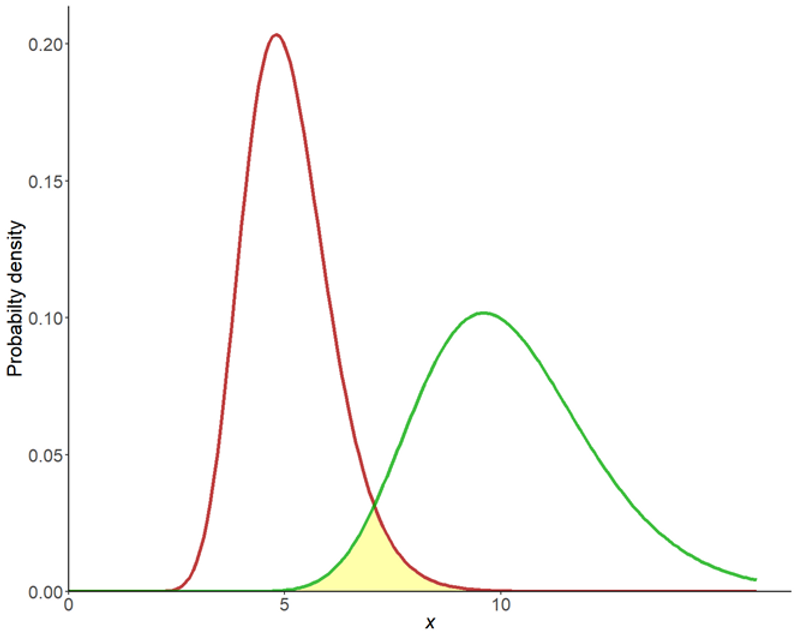
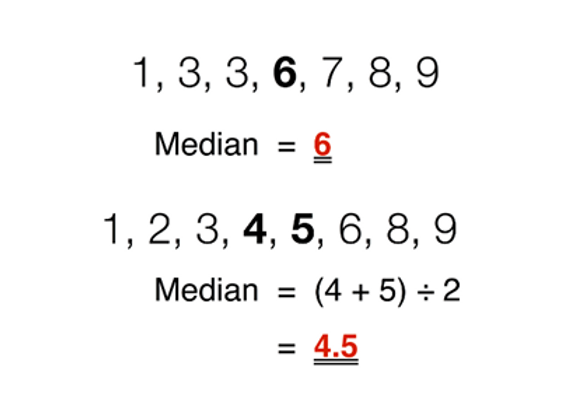
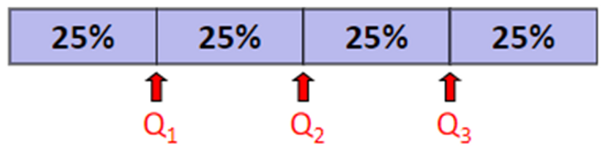
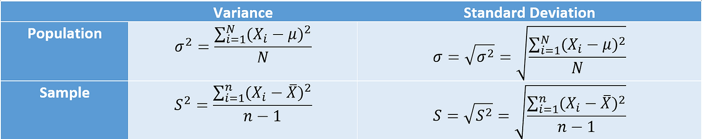
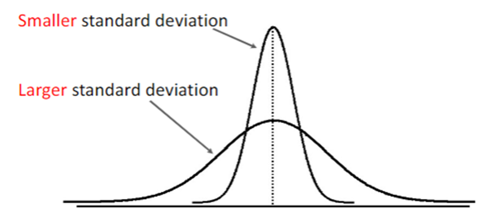
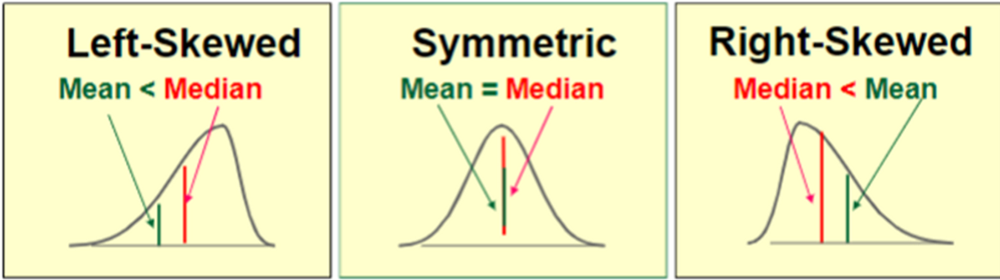
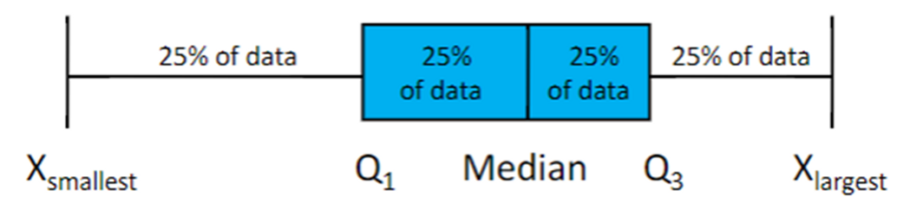
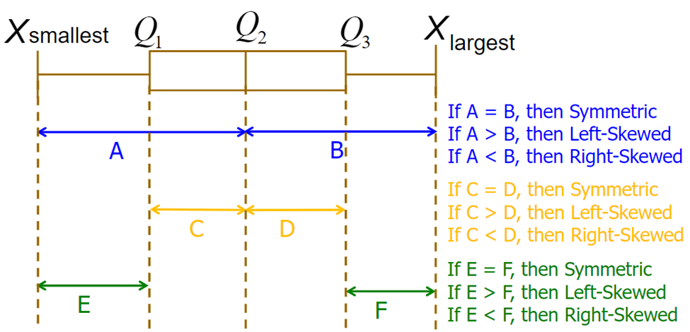
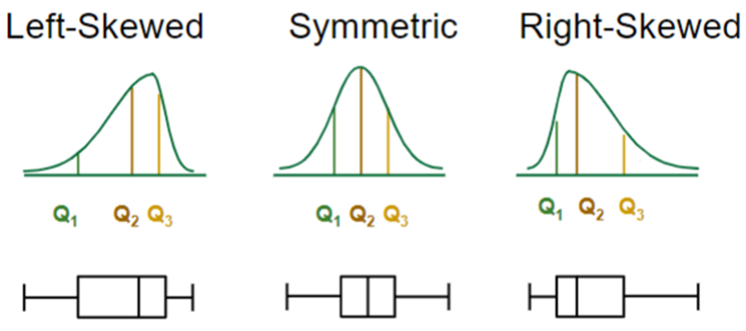

In this story, we will go over the three main aspects pertaining to a distribution.
- Central Tendency
- Variation
- Shape
We will break down each aspect one by one and discuss the measures that are used to describe each aspect. Let’s go!
The Three Aspects
Let's begin by defining the three aspects.
- Central Tendency – describes the center of a distribution
- Variation – describes the dispersion (spread) of a distribution
- Shape – describes the pattern of a distribution
Pretty simple right? To make things even more clear, let’s visualize some distributions.

In the graph above, we have two distributions. It is pretty clear that the two distributions have different centers of gravity. The red distribution appears to center around 5, while the green distribution appears to center around 10. These two distributions are marked by different ‘centers’, or central tendencies.
Now you should also realize that the two distributions also have different spreads. The red distribution is thinner and more focused around its center, whereas the green distribution is fatter and spreads out more. This spread around the center of the distribution is what we refer to as variation.
Finally, the shape is just the ‘shape’ of the distribution. If you ignore the fact that the two distributions have different central tendency and variation, their shape is pretty similar. Below are just some examples of what distributions can look like. We’ll also discuss a few of these later.
Now that we understand what each of these aspects means, let’s see what measures and statistics help us quantify these aspects.
Central Tendency
To quantify central tendency (where the center of the distribution is), we have the 3Ms: mean, median and mode.
Mean
Mean is the average value, and it can refer to either the population mean or sample mean. The population mean is just the mean of the population, and the sample mean is just the mean of the sample. If you don’t recall the difference between a population and a sample, I recommend you go back to review Introduction to Statistical Study. Population mean and sample mean have different notations, $\mu$ (pronounced as mu) and $\bar{x}$, respectively. To calculate mean, you simply add up all the values and divide them by the number of values.
$$\text{Sample Mean: }\bar{X}=\frac{\sum_{i=1}^nX_i}{n}=\frac{X_1+X_2+\dots+X_n}{n}$$
$$\text{Population Mean: }\mu=\frac{\sum_{i=1}^NX_i}{N}=\frac{X_1+X_2+\dots+X_N}{N}$$
Lowercase $n$ stands for the sample size and capitalized $N$ stands for the population size. These notations do make a difference so make sure you remember them thoroughly.
Median
Median is the middle value of the sorted data. In other words, if you sort the data from smallest to largest, the median will be the value in the middle.
- In the case where $n$ or $N$ is an odd number (the first line of data below), there will be an undisputed middle value.
- But in the case where $n$ or $N$ is an even number (the second line of data below), the median becomes the average of the 2 middle values.

Mode
Mode is the value that occurs the most. It is possible to have no modes when all values occur just once. In other scenarios, you could also have multiple modes when multiple values top the number of occurrences simultaneously. Mode is the only measure out of the 3Ms that can be applied to categorical data as well.
The Effects of Outliers
Recall that when we measure central tendency, we are trying to figure out the center of the distribution. Our measurement could be disrupted by Outliers, values that lie at an abnormal distance from other values in the distribution. So how do the 3Ms react in the presence of outliers?
In summary:
- Mean is affected by outliers. Outliers tend to pull the mean toward their ends.
- Median is not affected by outliers. Outliers do little to change the value of the middle value.
- Mode is also not affected by outliers. The presence of extreme values is unlikely going to change the fact that the mode has the highest frequency.
We can do a little experiment to justify these claims. Consider two datasets, one with an outlier and one without an outlier.
Without Outlier: 3, 5, 4, 5, 6, 4, 3, 4, 5, 5, 3, 6
With Outlier: 3, 5, 4, 5, 6, 4, 3, 4, 5, 5, 3, 40
Just by eyeballing the data, we can see that values generally fall around 4-5. The outlier (the 40 in red) is usually not representative of the data so let’s ignore it for now. We’re expecting values 4-5 as good measures of central tendency.
Now let’s calculate the 3Ms for each of the datasets.
| Central Tendency Measure | Without Outlier | With Outlier |
|---|---|---|
| Mean | 4.417 | 7.25 |
| Median | 4.5 | 4.5 |
| Mode | 5 | 5 |
We can see that, despite the presence of an outlier, the median and mode didn’t change at all. They maintained at 4.5 and 5, which are good estimates of central tendency. The mean, however, increased to 7.25. The mean value is far from 4-5, making it a bad measure of central tendency in this case. The takeaway here is:
Because mean is more subjected to change by outliers, median and mode should be preferred over mean as the measure of central tendency in the presence of outliers.Variation
Next, let’s try to quantify variation, or the spread of the distribution. We have five measures that quantify spread: range, quartiles, IQR, variance and standard deviation. Let’s begin with the most straightforward measure, range.
Range
The Range is just the difference between the largest and smallest values. In a sense, the range does tell us how spread out the distribution is, but it’s not a very detailed measure. We don’t know anything about the distribution other than its most extreme values. The range value relies solely on the largest and smallest value, so it is also very sensitive to outliers
$$\text{Range} = X_{\text{largest}}-X_{\text{smallest}}$$
Quartiles
Quartiles are values that split the sorted data into 4 segments with an equal number of values in each segment. The illustration below should be more than clear.

25% of the smallest observations will fall below Q1 and 25% of the largest observations will be greater than Q3. Q2 is the same as the median. To find the three quartiles, we can use the following formulas to find their corresponding index in the sorted data.
$$\text{Index of Q1} = \frac{n+1}{4}$$
$$\text{Index of Q2} = \frac{2(n+1)}{4}$$
$$\text{Index of Q3} = \frac{3(n+1)}{4}$$
- If the calculated index is a fractional half, then we take the average of the two corresponding data values.
- If the calculated index is a fraction but not a fractional half, then we round the result to the nearest integer to find the ranked position.
Don’t worry if you don’t understand. Let’s try an example. Consider the following sorted dataset:
$$3, 5, 5, 7, 9, 10, 12, 15, 15, 16$$
This data has 10 observations ($n=10$), so we can fit $n$ into the equations to calculate the index of the quartiles.
$$\text{Index of Q1} = \frac{10+1}{4}=2.75$$
$$\text{Index of Q2} = \frac{2(10+1)}{4}=5.5$$
$$\text{Index of Q3} = \frac{3(10+1)}{4}=8.25$$
The index for Q1 is 2.75, a fraction but not a fractional half. Therefore we round 2.75 to the nearest index which is 3. That means the 3rd value in the sorted order (which is 5) is Q1.
$$\text{Q1} = 5$$
| Data | 3 | 5 | 5 | 7 | 9 | 10 | 12 | 15 | 15 | 16 |
|---|---|---|---|---|---|---|---|---|---|---|
| Index | 1 | 2 | 3 | 4 | 5 | 6 | 7 | 8 | 9 | 10 |
The index for Q2 is 5.5, a fractional half. Therefore, Q2 will be the average of the value at index 5 (which is 9) and the value at index 6 (which is 10).
$$\text{Q2} = \frac{9+10}{2}=9.5$$
The index for Q3 is 8.25, a fraction but not a fractional half. Like Q1, we round the index to the nearest integer 8. Q3 is the 8th value in the sorted order.
$$\text{Q3} = 15$$
Interquartile Range (IQR)
IQR is the abbreviation for interquartile range and it measures the spread of the middle 50% of data. In other words, IQR is the difference between Q3 and Q1.
$$\text{IQR} = \text{Q3}-\text{Q1}$$
For the example that we just used, we can find the IQR as 10.
$$\text{IQR} = 15-5=10$$
Furthermore, the IQR could actually be used to find outliers within a set of data. The rule of thumb is:
If the value falls outside of range below, then the value is considered an outlier.$$[Q_1-1.5\times\text{IQR}, Q_3+1.5\times\text{IQR}]$$
Let's consider another example with the following array of sorted data.
$$11, 12, 13, 16, 16, 17, 18, 21, 22$$
If we use the index equation to find the quartiles, we will arrive at the following results (use this as an opportunity to practice for yourself):
$$Q_1=12.5$$
$$Q_2=16$$
$$Q_3=19.5$$
$$\text{IQR}=7$$
Now we can plug these values into the range to see if we have any outliers.
$$[12.5-1.5\times7, 19.5+1.5\times7]=[2,30]$$
According to the rule of thumb, any values less than 2 and greater than 30 are outliers, and it appears that there are no outliers in our data.
Variance and Standard Deviation
Variance and Standard Deviation (I’ll use std as an abbreviation from time to time) are arguably the most common measures of variation that you will encounter in your statistics career. Both these two statistics measure the spread of data around the mean. So what’s the difference between the two? Let’s just directly look at the formula.

Don't be scared by the formula. It's actually really simple if you break it down. We can see that the standard deviation is just the square root of variance. If you have one of either value, then you can easily derive the other.
The main difference between the variance and the standard deviation is their units. The standard deviation is expressed in the same unit as the mean, whereas the variance is expressed in squared units. Therefore, the standard deviation usually gives a more comparable idea about the spread of the distribution.But at the end of the day, both measures can be used to represent the variation of a distribution. The larger the variance/std, the more spread out the distribution.

Why does sample variance/std divide by n-1? (Advanced)
In case you’re curious why sample variance/standard deviation divide by n-1, here is why.
To put it simply, (n−1) is a smaller number than (n). When you divide by a smaller number you get a larger number. Therefore, when you divide by (n−1), the sample variance will work out to be a larger number.
Let's think about what a larger vs. smaller sample variance means. If the sample variance is larger, then there is a greater chance that it captures the true population variance. That is why when you divide by (n−1) we call that an unbiased sample estimate, whereas dividing by (n) is called a biased sample estimate.
Because we are trying to reveal information about a population by calculating the variance from a sample set we probably do not want to underestimate the variance. Basically, by just dividing by (n), we are underestimating the true population variance, that is why it is called a biased estimate.
Don't worry if you don't understand this explanation. This requires a strong understanding of the relationship between population parameters and sample statistics. For now, you can stick to memorizing the formula.
Finally, range, IQR, variance and standard deviation will never be smaller than 0. The smallest they can get is 0, where all of the values are the same (no spread/variation whatsoever).
Shape
We have arrived at the last aspect of distribution, shape. We previously mentioned that a distribution could take on many shapes. Here, I’ll only discuss one specific shape of a distribution, a skewed distribution.
Skewness is the property that describes the extent of symmetry for the distribution.
- A skewness of 0 means that the distribution is symmetrical.
- A skewness less than 0 means that the distribution is left-skewed.
- A skewness greater than 0 means that the distribution is right-skewed.
Let’s first see the difference between a left-skewed distribution and a right-skewed distribution.

A good way to remember which side is which is to look at your feet. If you draw a distribution over the toes of your left foot, then you have a left-skewed distribution. If you draw a distribution over the toes of your right foot, then you have a right-skewed distribution. Pretty cool right!
Anyways, you might have noticed from the picture above that you can also compare the mean and median to see whether the distribution is skewed. The rules are simple:
- If mean < median, then it is left-skewed
- If mean == median, then it is symmetric
- If mean > median, then it is right-skewed
Now, these general rules won’t apply in every single case. If you have a very random, complicated distribution, then you can’t just conclude that the distribution is skewed by comparing the mean and the median. But you should be able to see why these rules are the way they are and will typically be the case if the distribution is not too weird. If you have a right-skewed distribution, then you have these large outliers to the right of the distribution. They pull the mean to the right because the mean is more sensitive to outliers, but the median stays about the same because the median isn’t very sensitive to outliers. That’s why the mean will usually be larger than the median in the right-skewed distribution. The same logic applies to a left-skewed distribution.
Five-number Summary
The Five-number Summary includes five numbers that describe the shape of the distribution. The five numbers are the smallest observation, Q1, median (Q2), Q3 and the largest observation. The plot form of a five-number summary is what we commonly refer to as a Boxplot.

A boxplot can be seen as a very simple representation of the distribution. We can also estimate the skewness by looking at the boxplot. The following picture summarizes it all:

As you can see above, there are three comparisons that we can do. If you’re confused by the rules, maybe this picture below will help illustrate them.

Sometimes the rules will contradict each other. The comparison of A and B might indicate that the distribution is right-skewed, but the comparison of C and D might indicate otherwise. In this case, we might have to refer to the comparison of E and F (the third rule) as the deal breaker.
Conclusion
Wow! We covered quite a lot. We discussed the three main aspects of distribution:
- Central Tendency
- Variation
- Shape
We mentioned the different statistics and measures that quantified the three aspects. A lot of formulas and calculations for sure, but a proper calculator and a formula sheet are all you need. It's more important that you understand what each of these statistics means. In our next story, we will move on to the topic of probability.
Next: Probability